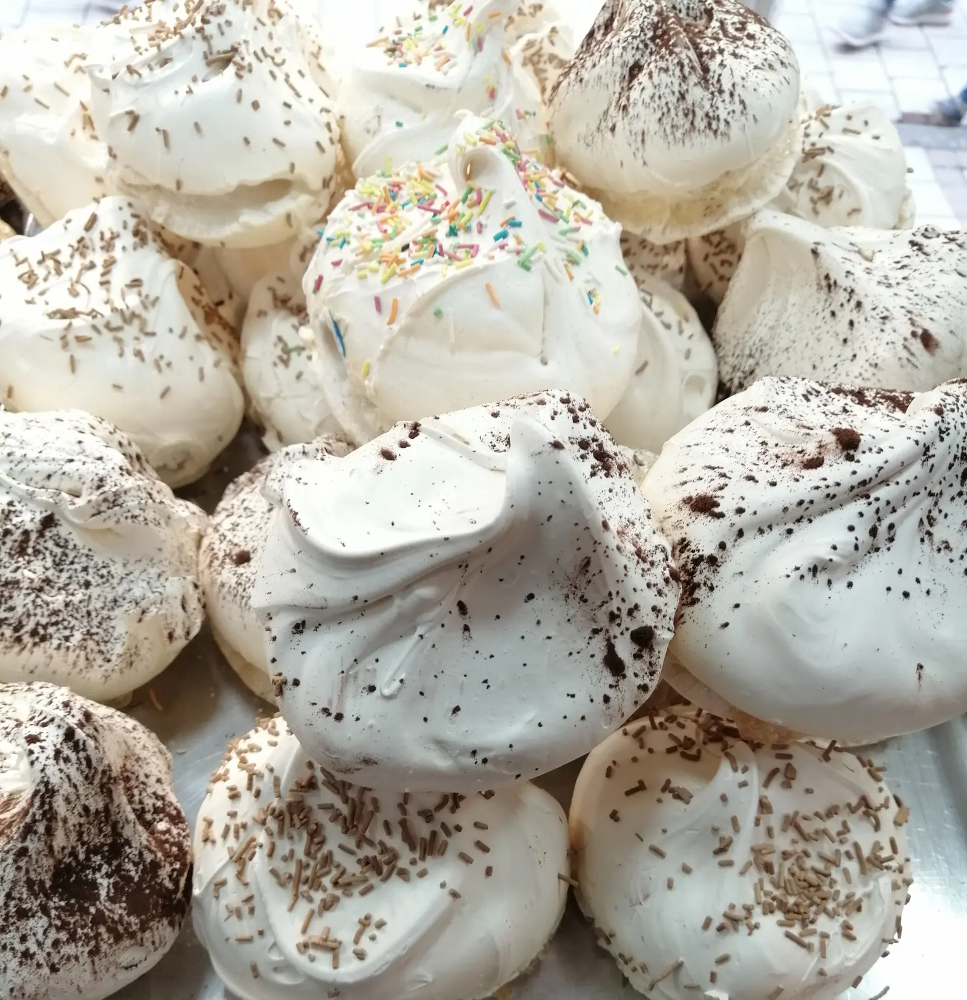

Pasta, dondurma ve tatlı · Kırklareli
Dededen toruna.
Doğum günü, Anneler Günü ve Öğretmenler Günü pastalarımız var. Özel günleriniz için sipariş alıyoruz.
- Şimdi
- SaatlerPzt-Paz 08:00–00:00
- Adres50 Cumhuriyet Caddesi, Merkez, Kırklareli, 39100
- Telefon0288 212 03 32
Tarihçemiz
Pastalarımız el yapımıdır.
Pastaların yanında kuru pastalar, şerbetli ve sütlü tatlılar ile dondurma çeşitlerimiz de var.
Merkez, Kırklareli
Bizi Kırklareli'nde bulun
| Pazartesi | 08:00–00:00 |
|---|---|
| Salı | 08:00–00:00 |
| Çarşamba | 08:00–00:00 |
| Perşembe | 08:00–00:00 |
| Cuma | 08:00–00:00 |
| Cumartesi | 08:00–00:00 |
| Pazar | 08:00–00:00 |
- Özel gün pastanız için bizi arayın.